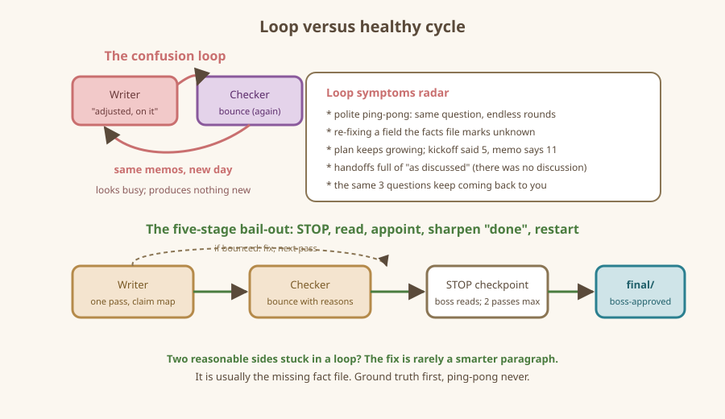

On this page: What a confusion loop feels like - Why loops happen - The five-stage bail-out (fits on one index card) - Prevention that pays for itself - Never unattended, never runaway - The loop vs. the healthy cycle - A real-shaped rescue (condensed) - Recap card
Spotting Confusion Loops
Teams can get stuck in polite circles. Here is the radar, the toolkit, and the trap door.
What a confusion loop feels like
A confusion loop is when your team keeps working without getting anywhere. It rarely looks broken from the outside — everyone seems busy, memos flow, "on it!" replies stack up. The tell is repetition with no new output:
- Two agents keep politely asking each other the same question instead of answering it (the ping-pong).
- Revised drafts keep "fixing" a field the facts file says is unknown — each pass asserts a different value, so nobody trusts any copy.
- The plan keeps growing: kickoff said five items, by round four the memo covers eleven, half of them invented.
- Every handoff includes "as discussed" — but there is no discussion; agents guess what each other meant.
- You are the bottleneck: the team keeps sending you the same three questions each round.
If any of these is happening, stop the team. Stopping is free; a shuffled stack of confused files costs hours.
Why loops happen
Almost every loop has the same four causes, in order of how often you will meet them:
- No ground-truth file. Two agents each decide what "done" means, or what the facts are, rather than reading one folder. (Home fix: write it down in
kickoff.mdorfacts/and point both agents at it.) - Overlapping ownership. Two agents both editing (or rewriting each other via "helpful notes" that turn into edits) the same draft. (Home fix: one writer per file, no exceptions.)
- Green status lies. A file marked APPROVED or DRAFT does not match what its content shows. (Fix: a status is flipped only by the role allowed to flip it.)
- Too-large stage. The step got so big ("plan the launch") that instead of finishing it, agents discuss finishing it. (Fix: cut every step down to the size of one memo.)
Loops are rarely anyone's fault, and there is always a clean, small fix.
The five-stage bail-out (fits on one index card)
When you smell a loop, do this in order. It takes under ten minutes:
- Freeze. Tell every agent, in their own chat, one word: STOP. No more edits until the boss speaks.
- Read the log and the three newest memos. Find the moment the team last moved forward. Where was a status flipped, a bounce answered for real? (2026-03-01 CHECKER bounced pedal-02, and then?) If the answer is "I edited after the bounce without fixing the stated problem," you have found the break in the circuit.
- Appoint one owner for the stuck file. Not "whoever": one name, one file. Everyone else becomes a note-writer.
- Rewrite the definition of done in four lines. Physically, in the kickoff file: "pedal-02 listing is done when: (a) every claim traces to a fact file, (b) unknown values say 'not stated', (c) checker approved." Vague goals generate loops; checkable goals destroy them.
- Restart with a fresh kickoff note. One memo to the owner: recaps the goal in one line, points at the definition of done, and gives a due-when (a time-boxed run is acceptable — "one pass, then report").
The restart memo is deliberately fresh: the old thread carries loop residue, so do not paste it along.
Prevention that pays for itself
- Small teams. Three agents loop less than five. Anyone whose role has no file gets cut.
- Time boxes. In every kickoff: "If a handoff round makes no visible progress after two passes, stop and write the boss." Agents will honor it; you only have to read.
- Ground truth first. Never launch a team before
facts/or an equivalent exists. Teams launched over empty fact folders discover "facts" by majority vote. - One pass, then read. Especially early on: one cycle per session, then you read all outputs yourself before round 2. Ten minutes of reading protects you from an hour of unattended spinning.
- Kill-switch habit. However you run agents, figure out how to interrupt them before you launch them. If you do not yet know how to stop a tool mid-run, do not launch long runs with that tool yet.
Never unattended, never runaway
This book's projects are all supervised: you launch one pass, you read results, you launch the next pass. Do not build "runs all night" pipelines while learning. If a tool offers autonomous overnight operation, that is a feature for later chapters of your life — and for tools the companion handbook covers in detail.
The loop vs. the healthy cycle

A real-shaped rescue (condensed)
From Project B later in this book: the social-posts writer kept inventing selling points (like "instant download") that the book's own fact sheet never stated. The checker bounced the file; the writer replied "adjusted, carrying on" but changed only one of six claims; the checker bounced again, citing a slightly different detail; three rounds later, nothing had finished. Every memo was individually reasonable.
The five-stage bail-out fixed it in one round: freeze, read (the second bounce note had pointed at the wrong file!), one named owner on the posts file, a four-line definition of done ("no claims not sourced from facts/book-v1-fact-sheet.md"), fresh memo. Next draft: bounced zero times.
The lesson is symmetrical: when two reasonable agents loop against each other, the fix is rarely a smarter paragraph. It is the missing fact file.
Recap card
- Loops look like busy work with no new output. Freeze without guilt.
- Four causes: no ground truth, dueling owners, lying statuses, oversized steps.
- Bail-out: STOP, read, appoint, sharpen "done," restart fresh.
- Time-box everything; ground truth before launch; one pass, then human eyes.